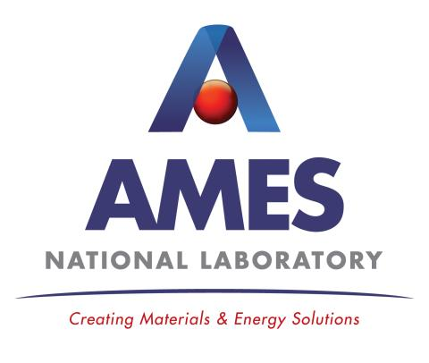
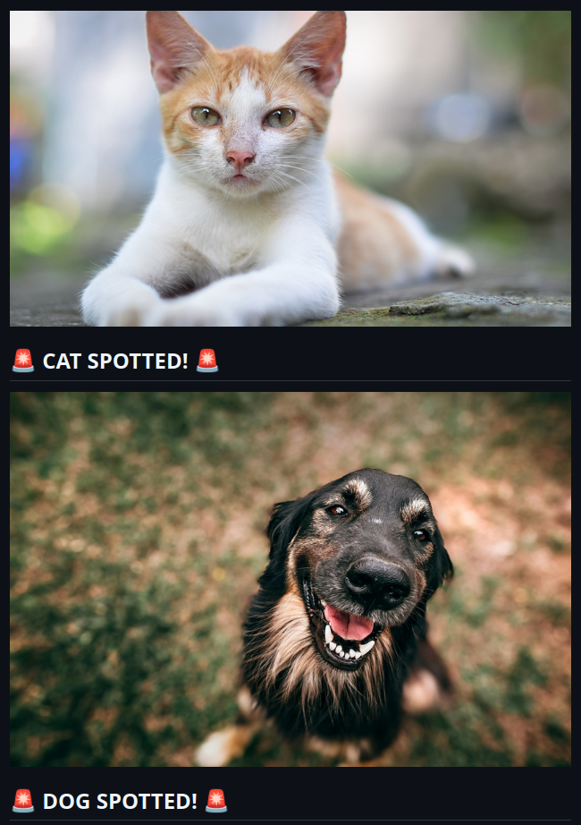
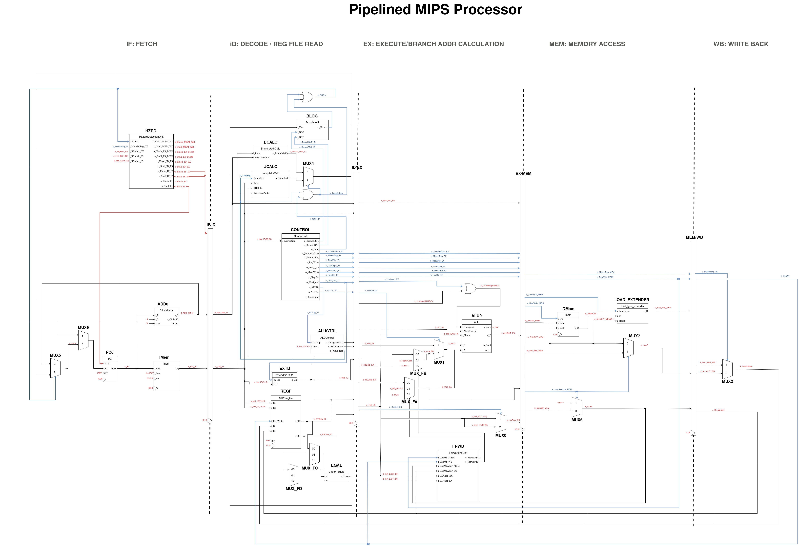
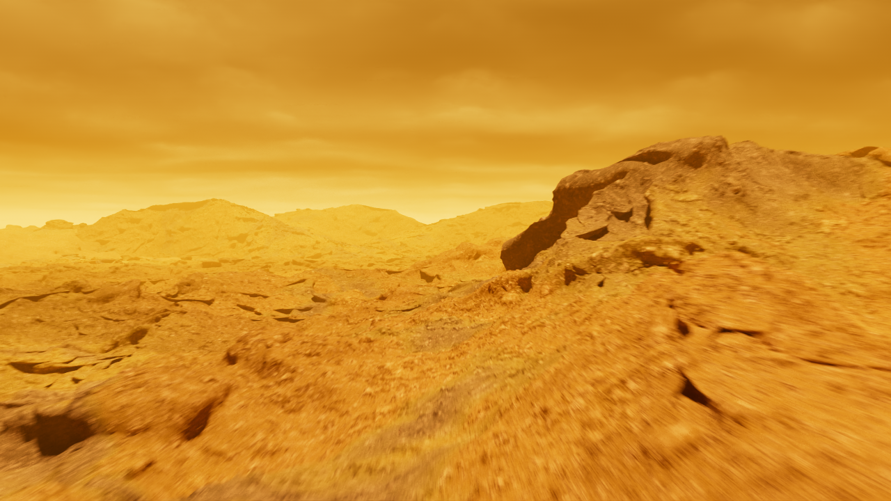
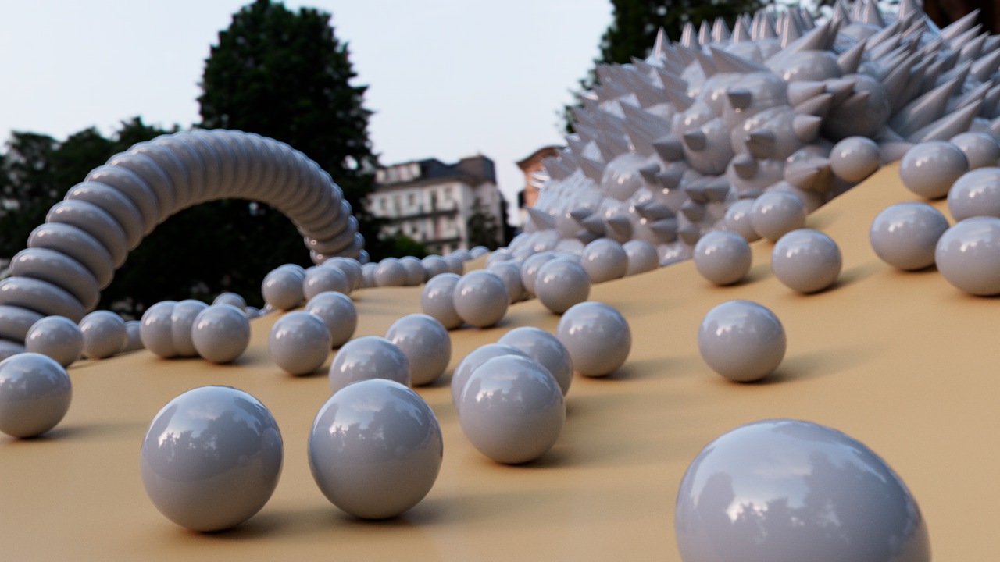
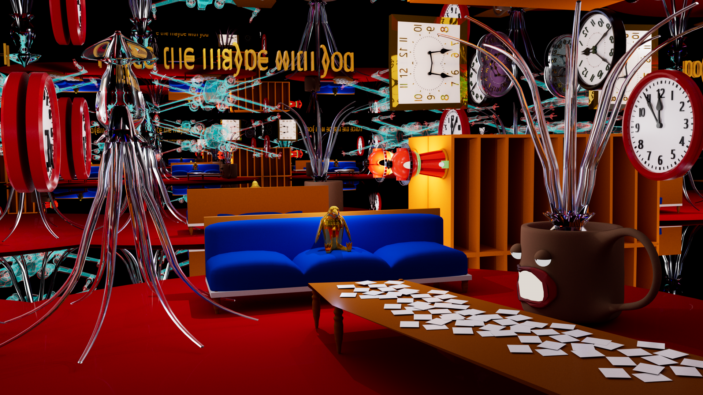
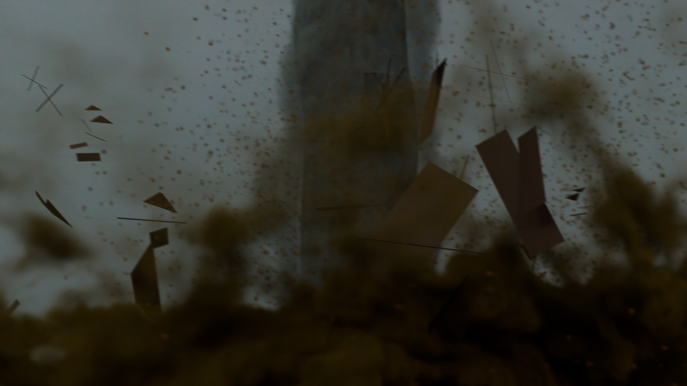
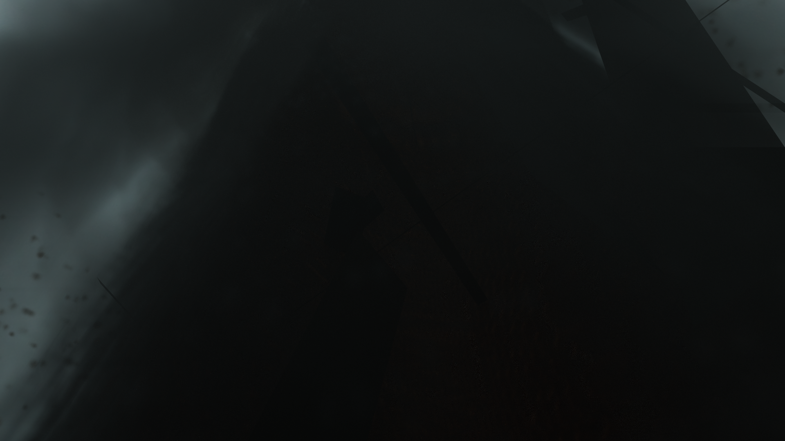
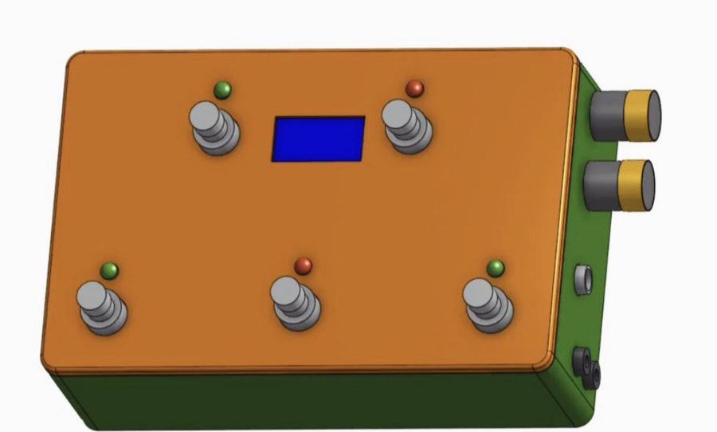
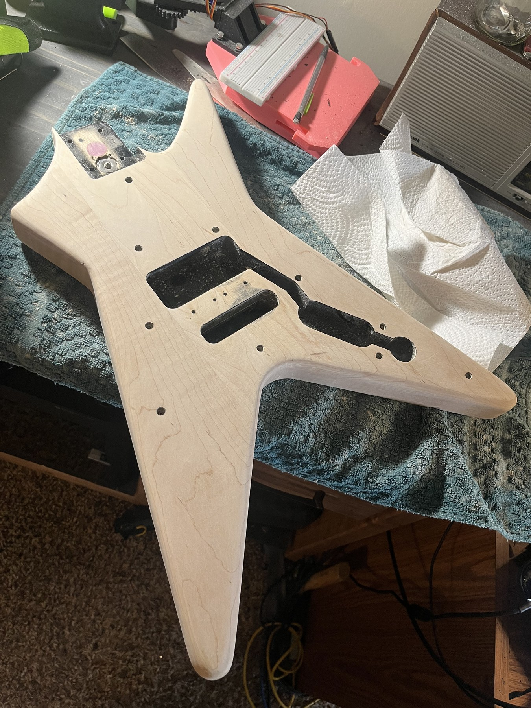

About Me
I am a soon-to-be graduate of Iowa State University with a Bachelor of Computer Engineering degree. I am passionate about new technology, music, and art. I enjoy learning new things. I don't believe too much in technical jargonning, so I'll let my work speak for itself.
Languages
Embedded, FPGA & Hardware
Software, AI & Mobile
Creative & Digital Media
Focus Areas
Academics

Iowa State University, Ames IA
->Bachelor of Computer Engineering with a minor in Music Technology
GPA: 3.38 (current)

Des Moines Area Community College, Ankeny IA
->Engineering (Pre-Engineering)
Cumulative GPA: 3.02 (2022 Summer)
Work History

Ames National Laboratory
->Software Developer / ALAB Assistant (Paid-Internship)
[March 10, 2025 - August 23, 2025]
Software Developer / ALAB Assistant (Paid-Contributor)
[August 23, Present]
- Collaborated with a team to develop RxnRover, an open-source lab automation software platform.
- Updated the RxnRover website, including API documentation, tutorials, and a plugin catalog using Sphinx.
- Developed RxnRover plugins and device drivers to control and communicate with lab equipment using LabVIEW.
- Incorporated user feedback to enhance usability and implement new features.
- Managed 45+ GitHub repositories as a member of the RxnRover organization.
- Provided technical support to scientists in lab environments, resolving hardware and software issues.
- Responded quickly and effectively to fix bugs and minimize lab downtime.
- Contributed to multiple experiments in collaboration with Ames and Oak Ridge National Laboratories.
Projects
- Hardware & Embedded
- Software & Apps
- Audio
- Artwork
- Cool Stuff
Fallout Terminal Emulator
A playable clone of Fallout's word-guessing hacking terminal, built from scratch in Python.
Details

Cat VS Dogs AI Classifier
A neural network that tells cats and dogs apart from a single photo.
Details
You Can Run - AR Horror App
An AR horror game where a 3D monster hunts you down using a real pursuit algorithm and your phone's own sensors.
Details
Wackah Mole
A classic whack-a-mole game, but the mole's brain runs on reinforcement learning.
Details
Blockchain Flight Insurance (Ethereum)
A smart contract that pays out flight-delay insurance automatically when bad weather hits.
Details
CYFLYBOT - Senior Design Project
A drone and a ground robot that coordinate with each other to run warehouse missions autonomously.
Details

12 Step Digital Sequencer
A hardware step sequencer built entirely out of digital logic on an FPGA.
Details

Clean Up Robot
An autonomous robot that scans a room, finds objects, and picks them up with a 3D-printed gripper arm.
Details

MIPS CPUs
Custom MIPS processors, from a single-cycle design up to a full pipelined CPU.
Details
FPGA Audio Looping Station
A hardware 4-track looper pedal, run by an FPGA, that I designed, 3D-printed, and soldered myself.
Details
Binary Bond
Sound Collage
Silly Funny Ringtone
Getting Wine Drunk at a Restaurant and Passing Out
Sea of Tranquility
PLANET - 3D Animation











Modular Sequencer in MAX
A patch-based modular sequencer built from scratch in Max/MSP.
Details

Multi-Effects Looper (JOHNTRONICS)
A from-scratch multi-effects looper pedal, designed enclosure and all, built around a custom PCB.
Details

Peavey Mantis Refinish
Stripped, re-stained, rewired, and rebuilt an '80s Peavey Mantis body down to a glossy black finish.
Details
"Armonica" Inspired Sampled Instrument
A glass-harmonica-style instrument sampled from a single tuned wine glass.
Details
Reflections & Writings
Reflection on General Education at ISU
A written reflection on the value and experience of general education requirements at Iowa State University.
Read PDF ->Cumulative Reflection from my Experience at Iowa State University
A personal narrative exploring cumulative academic and personal growth throughout the university experience.
Read PDF ->The Ethics of AI: A Case Study
An examination of ethical considerations and real-world implications surrounding artificial intelligence.
Read PDF ->Distributed Coordination and Security in Autonomous Drone Swarms
A literature survey examining distributed coordination protocols and security vulnerabilities in autonomous drone swarm systems.
Read PDF ->Contact Me
Have a question or want to get in touch? Fill out the form below and it will open in your email client ready to send.